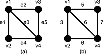
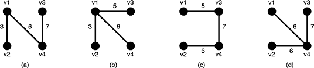

Home Page
F.A.Qs
Statistical Charts
Past Contests
Scheduled Contests
Award Contest
| Online Judge | Problem Set | Authors | Online Contests | User | ||||||
|---|---|---|---|---|---|---|---|---|---|---|
| Web Board Home Page F.A.Qs Statistical Charts | Current Contest Past Contests Scheduled Contests Award Contest | |||||||||
|
Language: Slim Span
Description Given an undirected weighted graph G, you should find one of spanning trees specified as follows. The graph G is an ordered pair (V, E), where V is a set of vertices {v1, v2, …, vn} and E is a set of undirected edges {e1, e2, …, em}. Each edge e ∈ E has its weight w(e). A spanning tree T is a tree (a connected subgraph without cycles) which connects all the n vertices with n − 1 edges. The slimness of a spanning tree T is defined as the difference between the largest weight and the smallest weight among the n − 1 edges of T.  Figure 5: A graph G and the weights of the edges For example, a graph G in Figure 5(a) has four vertices {v1, v2, v3, v4} and five undirected edges {e1, e2, e3, e4, e5}. The weights of the edges are w(e1) = 3, w(e2) = 5, w(e3) = 6, w(e4) = 6, w(e5) = 7 as shown in Figure 5(b).  Figure 6: Examples of the spanning trees of G There are several spanning trees for G. Four of them are depicted in Figure 6(a)~(d). The spanning tree Ta in Figure 6(a) has three edges whose weights are 3, 6 and 7. The largest weight is 7 and the smallest weight is 3 so that the slimness of the tree Ta is 4. The slimnesses of spanning trees Tb, Tc and Td shown in Figure 6(b), (c) and (d) are 3, 2 and 1, respectively. You can easily see the slimness of any other spanning tree is greater than or equal to 1, thus the spanning tree Td in Figure 6(d) is one of the slimmest spanning trees whose slimness is 1. Your job is to write a program that computes the smallest slimness. Input The input consists of multiple datasets, followed by a line containing two zeros separated by a space. Each dataset has the following format.
Every input item in a dataset is a non-negative integer. Items in a line are separated by a space. n is the number of the vertices and m the number of the edges. You can assume 2 ≤ n ≤ 100 and 0 ≤ m ≤ n(n − 1)/2. ak and bk (k = 1, …, m) are positive integers less than or equal to n, which represent the two vertices vak and vbk connected by the kth edge ek. wk is a positive integer less than or equal to 10000, which indicates the weight of ek. You can assume that the graph G = (V, E) is simple, that is, there are no self-loops (that connect the same vertex) nor parallel edges (that are two or more edges whose both ends are the same two vertices). Output For each dataset, if the graph has spanning trees, the smallest slimness among them should be printed. Otherwise, −1 should be printed. An output should not contain extra characters. Sample Input 4 5 1 2 3 1 3 5 1 4 6 2 4 6 3 4 7 4 6 1 2 10 1 3 100 1 4 90 2 3 20 2 4 80 3 4 40 2 1 1 2 1 3 0 3 1 1 2 1 3 3 1 2 2 2 3 5 1 3 6 5 10 1 2 110 1 3 120 1 4 130 1 5 120 2 3 110 2 4 120 2 5 130 3 4 120 3 5 110 4 5 120 5 10 1 2 9384 1 3 887 1 4 2778 1 5 6916 2 3 7794 2 4 8336 2 5 5387 3 4 493 3 5 6650 4 5 1422 5 8 1 2 1 2 3 100 3 4 100 4 5 100 1 5 50 2 5 50 3 5 50 4 1 150 0 0 Sample Output 1 20 0 -1 -1 1 0 1686 50 Source |
[Submit] [Go Back] [Status] [Discuss]
All Rights Reserved 2003-2013 Ying Fuchen,Xu Pengcheng,Xie Di
Any problem, Please Contact Administrator